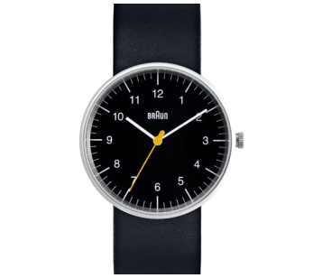

Braun Classic Watch
This Braun watch is a reissue of the original 1970's design from renowned design team Dietrich Lubs and Dieter Rams, both of whom have work featured in the Museum’s collection. The large watch features a numbered face, and the smaller watch has only index lines. Made of a matte stainless-steel case, black dial, mineral glass, a three-hand quartz movement, and a leather band. Water-resistant.
$160.00
$140.00 Member Price
-
0
+